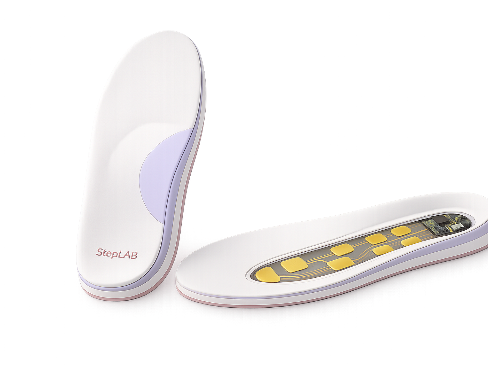

◌
足底压力分布
记录后跟、前掌、足弓及主要受力区域的压力变化，呈现真实行走中的足底负荷特征。
儿童足部成长智能监测
StepLAB 通过智能鞋垫，持续记录儿童真实行走中的足底压力与步态变化，让每一步都成为可追踪的成长数据。
从左右受力、步态节律到长期变化趋势，帮助家长更清晰地了解孩子的足部成长状态。

长期记录的意义
真实的步态与足底受力，会随着成长、鞋型、活动量和生活习惯持续变化。一次观察，只是一个瞬间。
短暂、局部的信息难以呈现孩子在日常生活中的真实变化。
把日常行走、上学与活动时的受力、节律留在连续数据里。
让家长看到的不再只是某一刻数据，而是一段时间内的成长轨迹。
Core capabilities
记录后跟、前掌、足弓及主要受力区域的压力变化，呈现真实行走中的足底负荷特征。
持续观察左右脚在负荷、步态节律和受力分布上的差异，理解长期变化。
结合压力感应与 IMU，识别着地、支撑、蹬离和摆动等主要步态阶段。
将不同时间段的数据形成可比较的成长档案，呈现足部与步态变化轨迹。
How it works
从感知、同步到整理，StepLAB 让数据以更容易理解的方式陪伴日常成长。
薄膜压力传感器分布于主要受力区域，记录不同位置的压力变化。
采集足部运动状态，识别步态节律与活动变化。
通过低功耗蓝牙，将数据同步至家长端 App。
完成数据校准、步态识别、左右对比与趋势分析。
将复杂数据转化为家长可理解的图表、趋势与变化提示。
Parent insight
数据不该成为理解的门槛。StepLAB 将日常信息整理成清晰、克制的趋势表达，让关注更有依据。
Everyday moments
在上学、步行和日常活动中，持续积累真实数据。
在跑跳和运动过程中，观察不同活动状态下的步态与受力变化。
通过周报和月报，对比不同阶段的变化，让成长更清晰。
Privacy matters
StepLAB 重视监护人的知情与管理权，以必要、克制的方式处理儿童相关数据。
FAQ
关于 StepLAB 的使用范围与日常体验。
当前产品面向处于成长阶段、需要长期观察足部和步态变化的儿童。具体适用年龄将依据产品测试和最终版本说明确定。
StepLAB 用于记录足底压力与步态趋势，不直接替代医生或专业机构的诊断。
系统以日常穿戴数据形成趋势记录，具体佩戴时间应依据产品说明和使用场景合理安排。
智能鞋垫采用低功耗设计，具体续航时间以后续量产版本为准。
产品可支持基于 BLE 的近距离设备提醒与手机协同功能，但不应宣传为高精度实时定位设备。